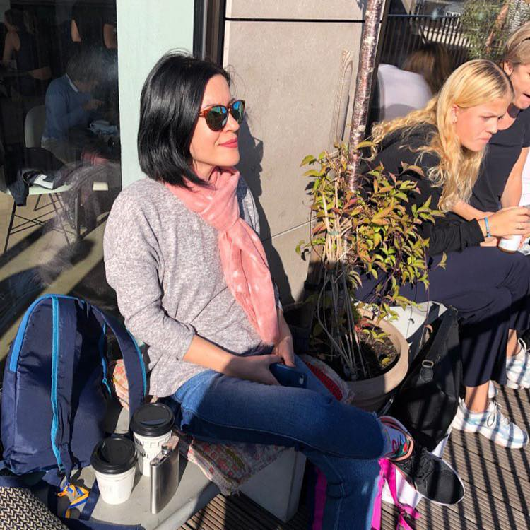

Yadrova Inna
Vartion RU

Phone number: +380930097727 (viber, telegram)
Emali: yadrovai@gmali.com
City: Dnepr/Kiev, Ukraine
 LinkedIn proflie
LinkedIn proflie
Product Manager
Summary
I love to dive deep into the product. Work on product creation and promotion. Determine the value of the task,
based on financial performance. I can solve different tasks: technical, creative, analytical. I get pleasure from achieving the goal. Well developed soft sklils.
Experience
Englishdom.com
Product Manager
August 2021-current
- Market, competitors research & analytics
- Providing UX/UI product optimization, prototyping.
- Analysis business metrics in order to improve product monetization and retention
- Improvements and new features based on collected data and researches
- Work with Development, Design and QA teams
- Tasks planning and prioritization
- Review implemented tasks by the Dev team
- Participate in A/B testing: setup, launch, control, analysis.
Together network
Product Manager
August 2019- August 2021
- Market, competitors research & analytics
- Providing UX/UI product optimization, prototyping.
- Analysis business metrics in order to improve product monetization and retention
- Improvements and new features based on collected data and researches
- Work with Development, Design and QA teams
- Tasks planning and prioritization
- Review implemented tasks by the Dev team
- Participate in A/B testing: setup, launch, control, analysis
Rush LLC (EVA.ua)
Product Manager
December 2018-August 2019
- Market, competitors research & analytics
- Identifying and documenting business requirements
- Cooperation with dev, QA teams, UI/UX designer
- Stats and metrics (roi, ltv, etc.)
- Strategic planning
- Strategic planning
- Processes optimization & prioritization
- Design and review of test cases or test scenarios
- Scrum activities (Product backlog, sptint, retrospective)
Education
Sep 1999 – May 2004
Kyiv National University of Culture & Arts, Management
Key sklils
Product development, Digital Marketing, Digital Strategy
User Experience, Design Thinking, Customer oriented.
Competitors Analysis, Data Analysis, Google Analytics,
Figma, Google webmaster tools, Google Tag Manager, Redmine, Jira, Confluence.
Certificates
- 2013 - Google Analytics Individual Qualification
- 2013 - Html/СSS (basic)
- 2014 - SEO (Search Engine Optimization)
- 2015 - Project Management
- 2019 - UX/UI design (Figma)
- 2021 - Product Finance and Metrics (iampm.club)
- 2021 - Business analysis (ithlilel.ua) – in progress
Languages: English — Pre -Intermediate